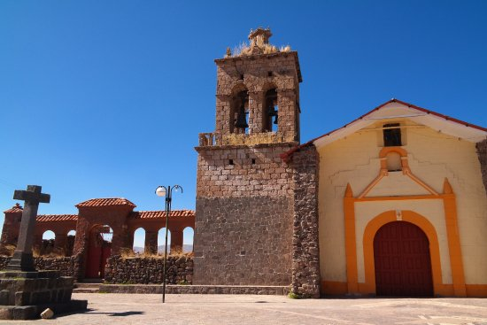
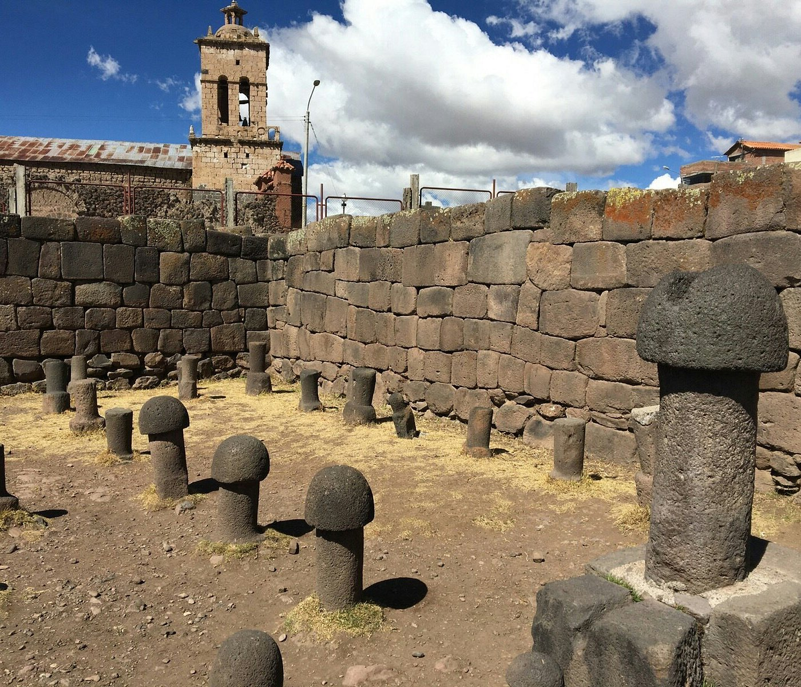
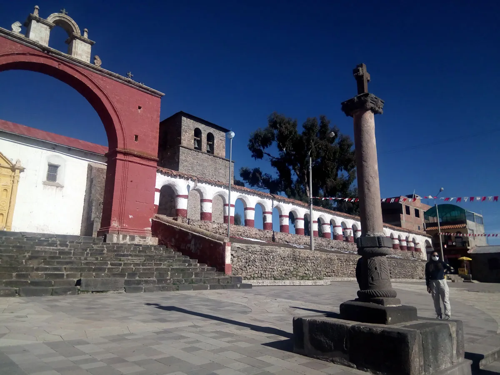

Chucuito: La ciudad de las cajas reales
Chucuito es un pintoresco pueblo ubicado a orillas del Lago Titicaca, conocido por su legado colonial y sus impresionantes paisajes. Antiguamente, fue un importante centro de recaudación de tributos durante la época virreinal, lo que le valió el nombre de "Ciudad de las Cajas Reales".
Historia
Chucuito tiene una rica historia prehispánica y colonial. Antes de la llegada de los españoles, fue un centro administrativo de los lupacas, una cultura aymara. Posteriormente, los españoles establecieron allí un importante centro de recaudación de impuestos, dejando como legado construcciones coloniales como la Iglesia de Santo Domingo y la Iglesia de la Asunción.



Horarios y Ubicación
- Ubicación: Chucuito, provincia de Puno, región de Puno, Perú.
- Horarios de visita: Acceso libre durante todo el día.
- Costo de entrada: Dependiendo del atractivo turístico, algunos sitios pueden requerir una tarifa de ingreso.
Consejos para Visitantes
- Explora el Templo de la Fertilidad: Un sitio arqueológico con monolitos de piedra que ha despertado la curiosidad de muchos visitantes.
- Viste ropa abrigadora: El clima puede ser frío, especialmente en las noches.
- Disfruta de la vista del lago: Desde Chucuito se pueden apreciar hermosos paisajes del Lago Titicaca.
- Conoce su legado colonial: Recorre sus iglesias y plazas llenas de historia.
- Apoya a los artesanos locales: Chucuito es un buen lugar para comprar tejidos y artesanías aymaras.